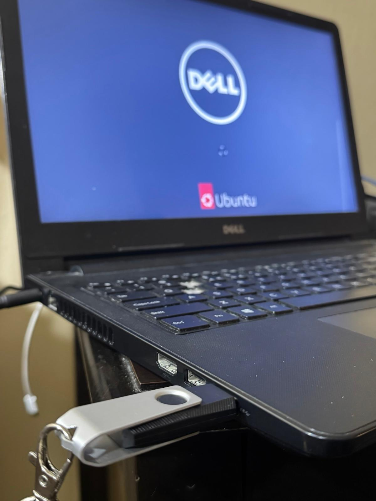
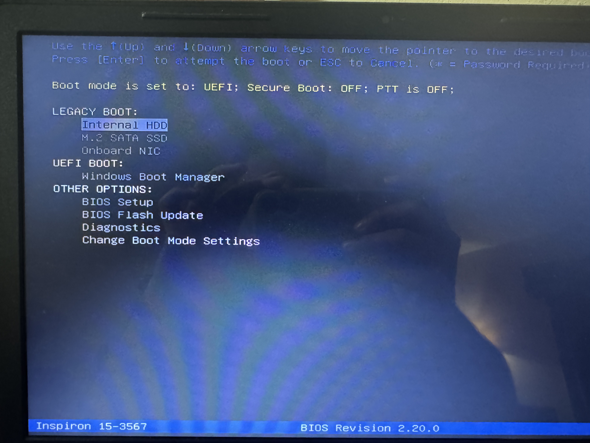
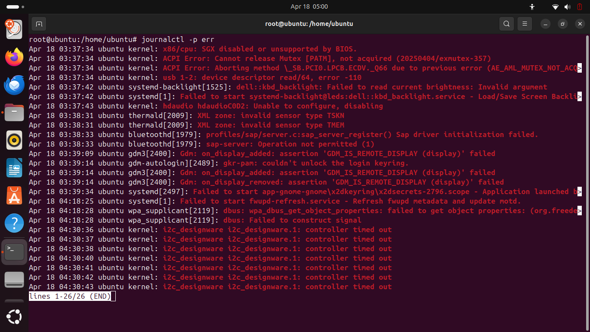
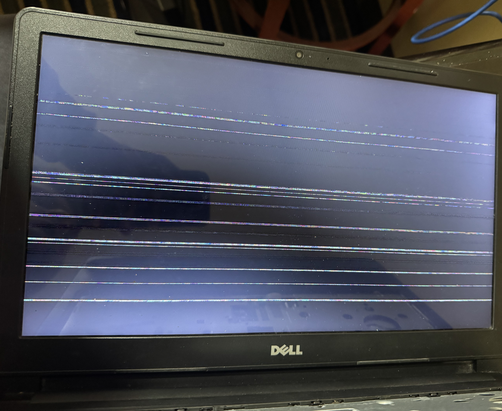
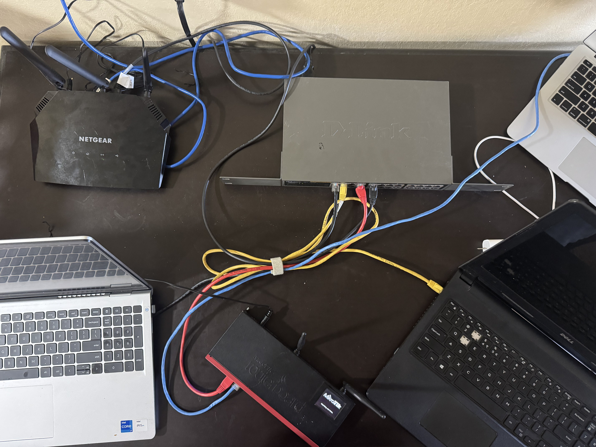
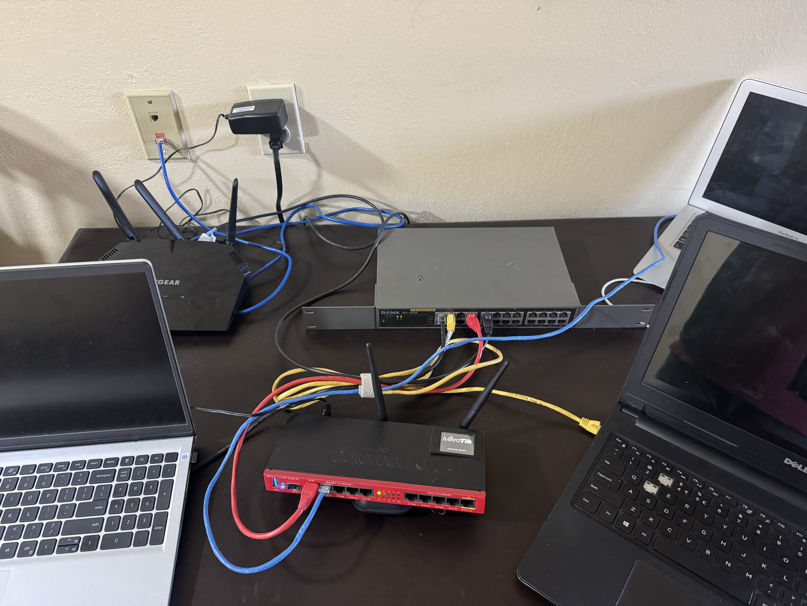
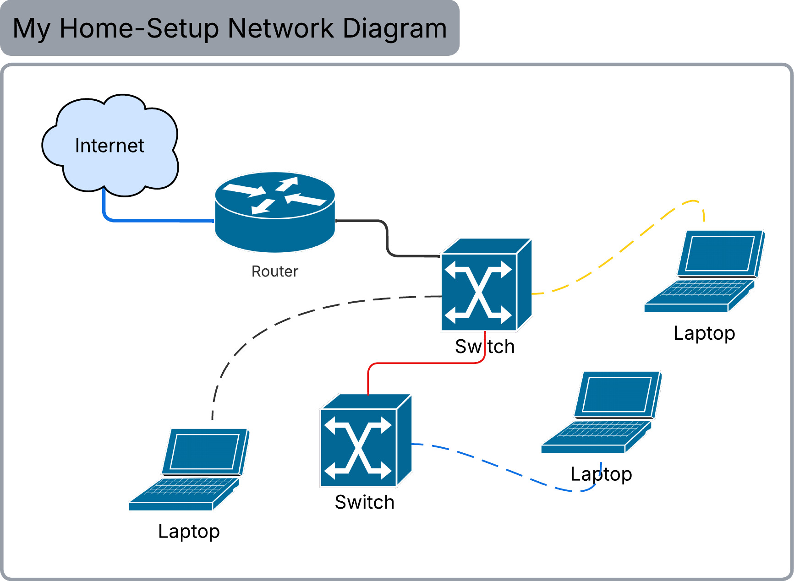
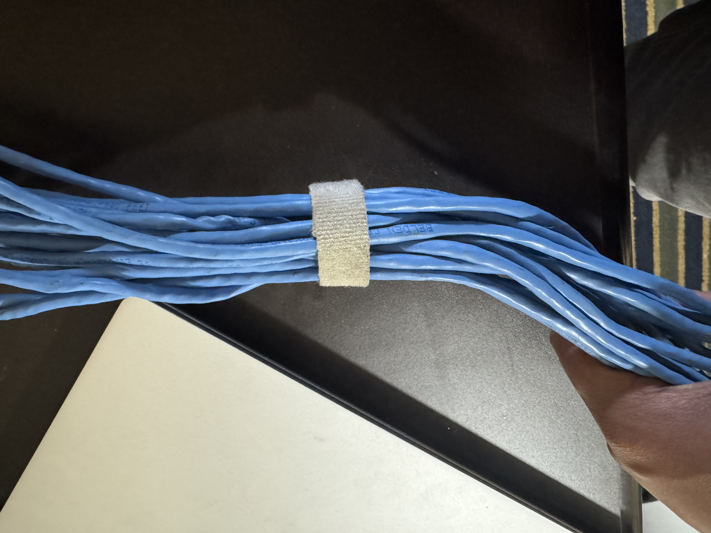
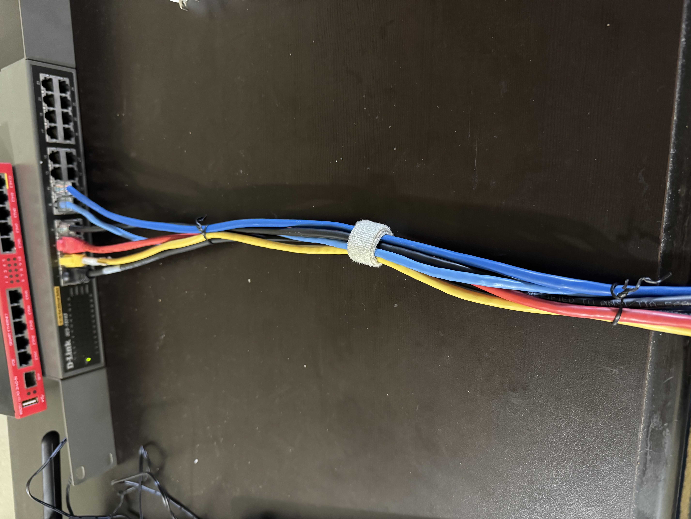
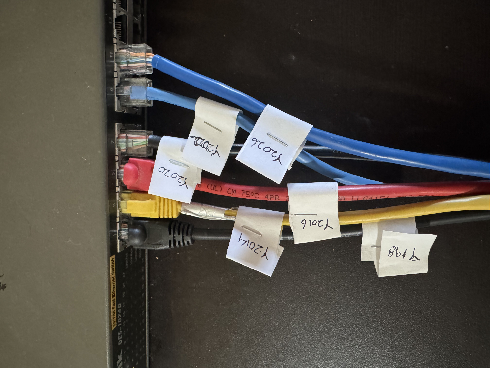

Hardware Triage & Troubleshooting













Hardware Triage & Health-Check Workflow (Windows)
I inspected system health from BIOS and diagnostics logs, verified component detection, and logged hardware findings as a technician would for a real data center incident.
Hardware Triage & Health-Check Workflow (Linux)
I used Linux command-line tools to inventory hardware, check SMART disk health, verify kernel detection, inspect sensors, and documented system triage findings in an AWS-style format.
BIOS/UEFI and Boot Order Troubleshooting
I checked BIOS settings, boot mode, and one-time boot menu to identify boot-order failures and restored the correct startup path for the operating system.
RAM Diagnostics & Component-Level Troubleshooting
I diagnosed memory faults through BIOS checks and diagnostics, performed component reseating to resolve contact failures, and validated POST behavior after remediation.
Disk Failure, Boot Failure & Recovery Validation
I simulated disk or boot-device failures, verified whether storage is detected, restored the correct boot path, and confirmed the system returned to normal operation.
Basic Rack / Cable / Port / Label Validation
I practiced physical discipline by mapping network topology, labeling both cable ends, checking link status, and validating connectivity after changes with structured documentation.
PXE Boot Availability Validation
I validated firmware-level PXE boot support, observed DHCP and boot messages, and documented whether the system was ready for network reprovisioning.
RAID Array Creation, Formatting, and Disaster Recovery
I created a RAID 1 array using mdadm, formatted it with ext4, simulated drive failures, performed hot-swapping, and cleaned up the array—demonstrating storage redundancy and recovery skills.


 - Distinguish hardware-level failures from boot-sequence misconfiguration.
- To complete the recovery workflow, I restored the correct boot priority with the internal OS disk as the primary device
- Confirmed normal system startup.
- I also validated alternate boot-source handling by testing USB-based boot selection through the one-time boot menu.
- Distinguish hardware-level failures from boot-sequence misconfiguration.
- To complete the recovery workflow, I restored the correct boot priority with the internal OS disk as the primary device
- Confirmed normal system startup.
- I also validated alternate boot-source handling by testing USB-based boot selection through the one-time boot menu.


 - I matched expected hardware inventory and ran manufacturer diagnostics to validate DIMM health
- I checked system logs for memory-related errors.
- To simulate a real component detection issue, I temporarily removed one memory module
- I matched expected hardware inventory and ran manufacturer diagnostics to validate DIMM health
- I checked system logs for memory-related errors.
- To simulate a real component detection issue, I temporarily removed one memory module